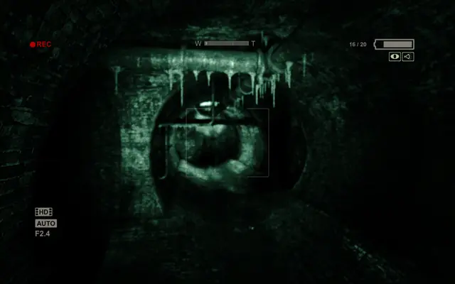
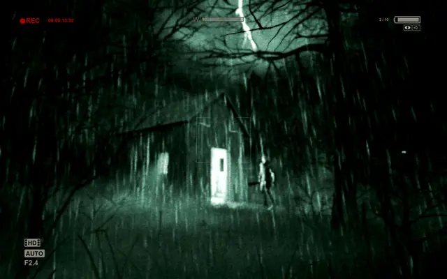
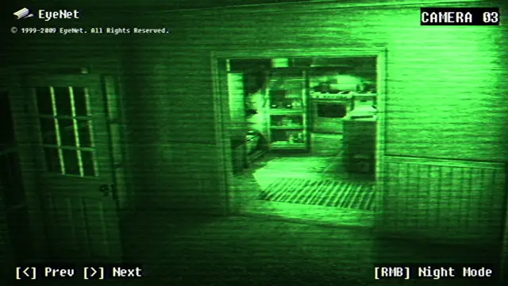
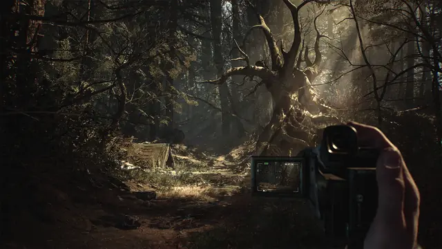
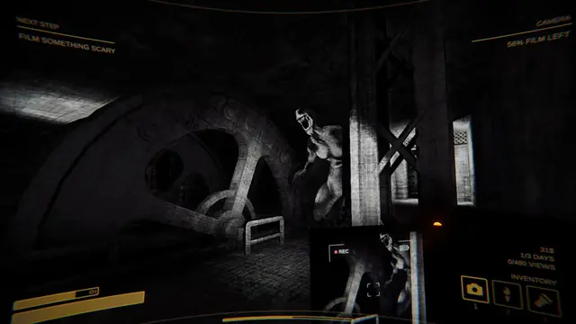
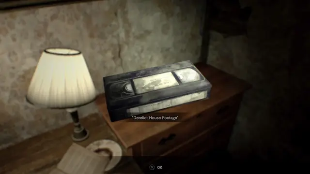
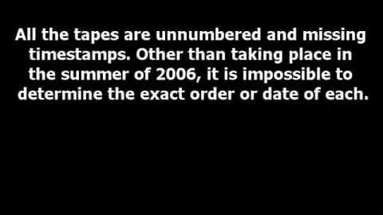
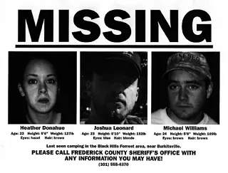
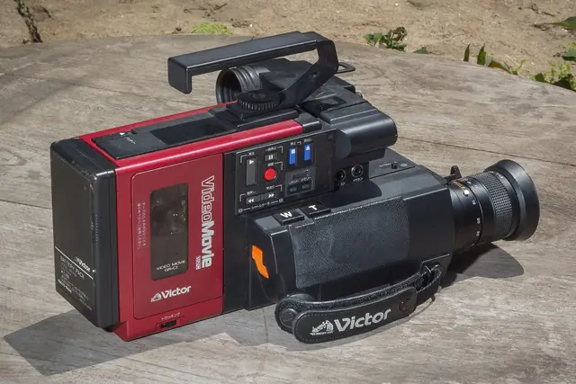

The feel
Found footage presents its shots as recordings of real events, discovered afterwards and passed on with little or no mediation.1 When a character holds the camera, you know no more than the person behind the lens, and the framing is often awkward, most visibly in the recurring image of a fallen camera.2 In her book on found-footage horror, Alexandra Heller-Nicholas writes that the camera "stands between our eye and the things we wish to see", and that it often refuses to go where we want to look.3
Games go a step further and hand you the camera. Outlast doesn't show you recovered tapes: you are the reporter making the footage as you play.3 Films often used shaky cam and crude lighting to hide small budgets, and Outlast turns them into mechanics. Its night vision is the only way to see in the dark and drains batteries you have to scrounge, so hiding under a bed and flicking it on and off is where the tension comes from.4
- handheld
- breathing
- night vision
- underexposed
- evidence
- still recording
Where it comes from
Cannibal Holocaust (1980), presented as a lost film shot by a documentary crew who went missing in the Amazon, is often considered the first found-footage film, and The Blair Witch Project (1999) made the technique popular.1 Blair Witch's directors taught their three actors to use a 16 mm camera and a camcorder, told them to record everything, and promoted the film as fact with a website of missing posters, investigator interviews and clips from the "found footage".5 In 2007, Paranormal Activity set handheld shots against fixed cameras that watch like surveillance video,2,1 and [REC] played as news coverage shot by a reporter and a camera operator.1
In games, Grasshopper Manufacture's Michigan: Report From Hell (2004) showed everything through the viewfinder of a cameraman with a news crew.6 Mark J. Hadley made Slender: The Eight Pages (2012) as a fan of the Marble Hornets videos,7,6 and Red Barrels gave Outlast (2013) a camcorder because so many films were using found footage and camcorders have night vision.8 Co-founder David Chateauneuf names [REC] and Quarantine as the films that inspired it most.9 Resident Evil 7 (2017) added found-footage tapes in which you play as the person filming.10,6
Core elements
Handheld camera
One set-up puts the camera in a character's hands, recording what happens in the first person. It is cheap, it excuses amateurish framing and sound, and it builds tension by limiting you to one person's view, often with shaky cam that moves continually and unpredictably to disorient you.1 The Blair Witch Project was shot by its own actors, and the shaky, amateurish result is part of what makes it feel like a real documentary.5
Fixed cameras
Fixed cameras record events automatically, like surveillance footage, which lets characters appear together and justifies shots with nobody in them.1 In Paranormal Activity these shots are wide, distant and indifferent to people, and may be badly placed to catch what happens. Their stillness makes you scan the whole frame for clues.2
Camcorder interface
In Outlast the camcorder is a tool, not decoration. It zooms, its night vision gets you through dark corridors, and whenever it is up, the screen shows battery power, zoom level, frame rate and the recording light.3 Night vision drains the batteries, so you have to scrounge more from the level.4
Off-screen threats
The camera hides as much as it shows: Alexandra Heller-Nicholas describes it as "deliberately and consistently exposed as faulty".3 Threats sit just off the edge of frame, where a fixed camera can't go to look.2 The Blair Witch Project never shows its witch, and that refusal is a large part of why it still unnerves.11
VHS tape artefacts
VHS adds its own faults: head-switching noise along the bottom of the picture, bands of tracking noise, fine detail cut off by the recording speed, colour that tends to slip further out of place with each copy, and the sharpening some decks added.12 Damage can tell the story too: Xavier Aldana Reyes points to damaged stock that simulates attacks on the person holding the camera or on the equipment.3
Footage presented as evidence
Someone found this recording and edited it for viewing. Aldana Reyes lists the usual framings: an official or unofficial government record, a tape or file left behind on someone's camera, phone or computer, or a home video taken home and played back.3 Paranormal Activity's opening titles suggest the footage is in official hands,2 and Blair Witch carried its fiction off screen with a website and flyers presenting its actors as missing.5
How to do it
Give someone a reason to film
Decide who holds the camera and why. Red Barrels made Outlast's hero a reporter, someone with no combat skills and a good reason to carry a camcorder,8 and the game's opening tells you to record everything.3 Films use a crew making a documentary, home movies, or a camera set up to document strange events.2
Add handheld camera shake
Drive the camera's movement with layered Perlin noise. Handheld operators shake more in rotation than in position, so set rotation noise first, then add position noise.13 Mix low, mid and high layers on each axis, at about 0.1 to 0.5, 0.8 to 1.5 and 3 to 4 Hz, with larger amplitudes for wide lenses than for telephoto. Keep every frequency below the game's frame rate, or the shake turns choppy.13
Give the camera gameplay uses
Give the camcorder jobs: a zoom, night vision for dark corridors, and an on-screen display showing battery power, zoom level, frame rate and the recording light.3 Outlast runs a timecode in the top left and lets night vision drain the battery, so switching it on and off while hiding becomes the tension.4 Its night vision has a greenish hue, with eyes reflecting back at you.14
Work at 480 lines
NTSC video has only 480 lines of vertical resolution, so apply the tape effect to 480-line footage and scale up afterwards. Scaling to 1080p first gives sub-par results and makes a signal-level effect run much slower.15
Simulate the video signal
Model how NTSC transmission and VHS encoding work instead of eyeballing the look with colour lookup tables and overlays.16 The VHS faults to simulate include head-switching noise at the bottom of the frame (8 lines tall, 3 of them off-screen), tracking noise (12 lines), the high-frequency detail lost at each tape speed (SP, LP or EP) and the sharpening some decks added.12
Build suspense before each scare
Let the player know something is out there before they see it, and stretch the wait longer than expected; startling is not the same as scaring, says Slender's creator Mark J. Hadley.7 Place the threat at random, because a scripted scare is expected on the next play.7 Resident Evil 7's team took a GoPro into haunted places in Osaka, and found the scariest moments came from rounding a corner or hearing a branch crack behind them.17
Add jump cuts and dropped frames
Edit the way a recovered tape would look: jump cuts and dropped frames inside long takes, titles over the footage, and hours of fixed-camera footage run in fast-forward.2 Resident Evil 7's found tapes let you play someone else's footage, and sometimes show you a place before the main character gets there.10
Cheat sheet
- Resolution
- 480 lines (NTSC); add the effect, then scale up15
- Head switching
- Bottom edge, 8 lines tall, 3 off-screen12
- Tracking noise
- Bands 12 lines tall12
- Tape speed
- SP, LP or EP, each cutting off fine detail differently12
- Handheld shake
- Rotation first; layers at 0.1 to 0.5, 0.8 to 1.5 and 3 to 4 Hz13
- Cast
- Four or fewer, filming themselves3
Do
- Give the person holding the camera a reason to keep filming, the way Outlast makes its hero a reporter on an investigation.8
- Make the camera something the player needs, as Outlast's night vision is for getting through the dark.3
- Build tension before a scare, and let the player wonder whether the threat is still out there.7
- Use the character's breathing to raise the intensity, but sparingly.9
Avoid
- Jump scares in place of suspense. As Hadley puts it, startling is not the same as scaring.7
- Scripted scares in the same place every time. They work once, then players expect them.7
- Too much breathing. Players start to feel they are playing a character instead of being there themselves.9
- Faking VHS with a colour lookup table and an overlay, which only eyeballs the look. Model how NTSC transmission and VHS encoding actually work.16
- Putting the horror in plain view. Films like The Blair Witch Project choose to limit what they show on screen.11
Tools and tutorials
- Realistic VHS style graphics, fast
A practical game-focused walkthrough from Carrots In The Sky.
- Retro VHS style game in Unity
An in-depth Unity build, from low resolution to post effects.
- VHS tape look in Godot
A short shader recipe for Godot.
- ntsc-rs
A free, open-source effect that emulates analogue TV and VHS artefacts, also as a plugin for video editors.16
- Cinemachine noise profiles
Handheld shake from layered Perlin noise, with frequency and amplitude ranges.13
- VCR OSD Mono
Blocky monospace type for an on-screen display.
Palette
Taken from Outlast, Resident Evil 7, Paratopic and Slender: The Arrival. Much of the colour comes from the camera: Outlast's night vision has a greenish hue.14
Feel the vibe
In motion
Listen
Outlast's main theme. Study how long it holds tension without resolving.
YouTubeAntonio Cora is credited with The Blair Witch Project's music.5 Study how close this sits to sound design rather than song.
YouTubeFrom Resident Evil 7. Study how a homely tune is made to sound rotten.
YouTubeFrom Paratopic's menu. Study how much unease a menu can set up before play begins.
YouTubeFrom Slender: The Arrival. Hadley kept the first Slender's music repetitive and droning, so it would not pull attention from the game.7
YouTube
More references









Games
- Michigan: Report From Hell
The whole game is seen through the viewfinder of a cameraman with a news crew.6
- Slender: The Eight Pages
Hadley made it to learn Unity and placed Slender Man at random, so even he can't predict him.7 Static on screen hints that you are seeing through a camcorder.6
- Outlast
Study the camcorder as interface: zoom, night vision, battery and the recording light.3 Batteries ration the night vision.4
- Slender: The Arrival
Adds a visible camera HUD and playable tapes, and was co-written by the team behind Marble Hornets.6
- Fears to Fathom: Carson House
Study how much tension it gets from security feeds and ordinary chores.
- Content Warning
The comic flip side. Study how filming scares for views makes the clips the reward.
Film, art and more
- The Blair Witch Project
Study the website as well as the film: missing posters, investigator interviews and clips presented as fact.5
- [REC]
News-crew footage1 that Red Barrels name as an inspiration for Outlast, night-vision camera included.9
- Lake Mungo
A pseudo-documentary of interviews and security-camera footage that may have caught a ghost.11
- Marble Hornets
The Slender Man video series Hadley was a fan of. His game's building nods to its Entry 51.7
- V/H/S
Study how its frame story ties a pile of found tapes together.
Sources
- 1found footage
- 2Return to Paranormalcy
- 3This Footage is Yet to be Found: Outlast and the Found Footage Aesthetic
- 4Outlast review: America’s most horrifying home movie
- 5The Blair Witch Project
- 6The Evolution of Found Footage in Video Games
- 7An Interview With Slender Creator Mark Hadley
- 8Horror in the Making: How Red Barrels outlasted Outlast
- 9Discussing Influences And Mainstream Horror With Red Barrels
- 10Here's everything the Resident Evil 7 guy told us about tapes, gameplay and the finger
- 1110 great found-footage films
- 12Filter: openfx.wtf.vala^NtscRs
- 13Working with noise profiles
- 14‘Outlast’ 10 Years Later: Found Footage Game Remains Undefeated in the Realm of Pure Interactive Terror
- 15OpenFX Plugin
- 16ntsc-rs
- 17How Resident Evil 7's devs cultivated horror from reality